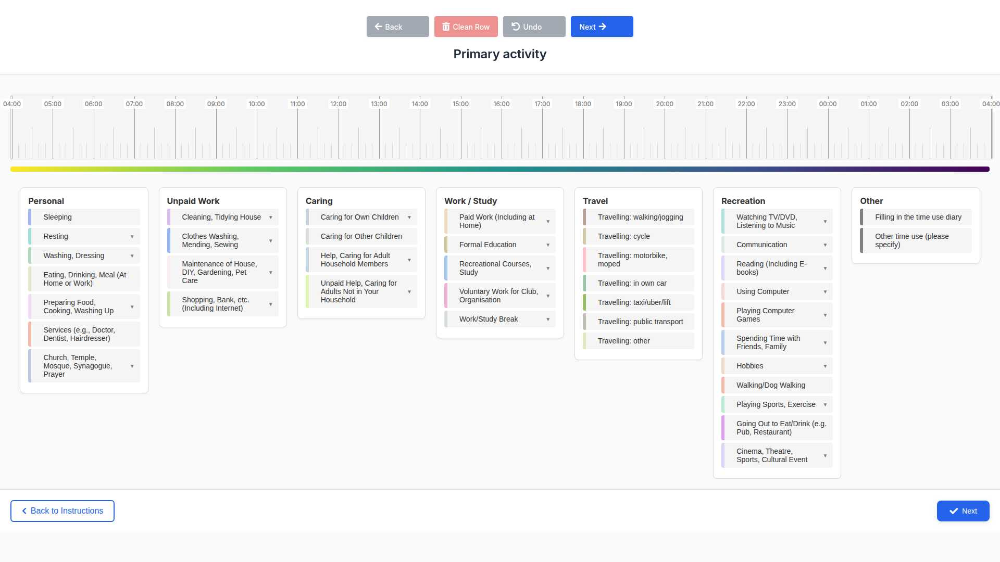

← Back to Documentation
Overview
O-ELIDDI features fully responsive layouts that adapt to different screen sizes and device types. The application automatically detects the user's device and optimizes the interface for the best user experience.
Key Responsive Features:
- Mobile-first responsive design
- Touch-friendly interface elements
- Adaptive timeline layout
- Optimized button placement and sizing
- Device-specific interaction patterns
Desktop Layout
The desktop version provides a comprehensive interface designed for precise mouse interactions and detailed data entry sessions.

Desktop Features
- Full-width timeline display
- Horizontal navigation controls
- Precise mouse-based drag and drop
- Larger clickable areas for detailed selection
- Optimized for keyboard navigation
- Multi-column button layout
Mobile Layout
The mobile version features a compact, touch-friendly interface optimized for smartphone usage and on-the-go data collection.
Mobile Features
- Compact vertical layout
- Touch-friendly controls
- Finger-optimized drag and drop
- Thumb-accessible navigation
- Simplified button arrangement
- Mobile-specific gestures support
Layout Comparison
Desktop (1024px+)
- Horizontal timeline orientation
- Multi-column control layout
- Hover effects enabled
- Keyboard shortcuts available
- Detailed tooltips
Mobile (< 768px)
- Vertical timeline orientation
- Single-column control layout
- Touch gestures optimized
- Simplified interaction model
- Mobile-friendly spacing
Responsive Breakpoints
The application uses the following breakpoints to determine the optimal layout:
| Device Type |
Screen Width |
Layout |
Features |
| Desktop |
1024px and above |
Full Desktop |
All features, multi-column layout |
| Tablet |
768px - 1023px |
Hybrid |
Touch-optimized with desktop features |
| Mobile |
Below 768px |
Mobile |
Compact layout, touch-first design |
Technical Implementation
The responsive design is implemented using:
- CSS Media Queries: Responsive breakpoints and layout adjustments
- Flexbox and Grid: Modern layout systems for adaptive containers
- JavaScript Detection:
getIsMobile() function for device-specific behavior
- Touch Events: Native touch event handling for mobile interactions
- Viewport Meta Tag: Proper mobile viewport configuration
Key CSS Classes:
.mobile-only - Elements visible only on mobile.desktop-only - Elements visible only on desktop.touch-friendly - Touch-optimized interactive elements.responsive-layout - Adaptive container layouts
Usage Recommendations
For Researchers
- Use desktop layout for detailed study setup and data analysis
- Test both layouts during pilot studies
- Consider participant device preferences when deploying
For Participants
- Mobile layout is ideal for quick, on-the-go data entry
- Desktop layout provides more detailed view for comprehensive logging
- Both layouts support the same functionality
O-ELIDDI Responsive Layouts Documentation - Designed for optimal user experience across all devices